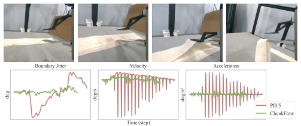
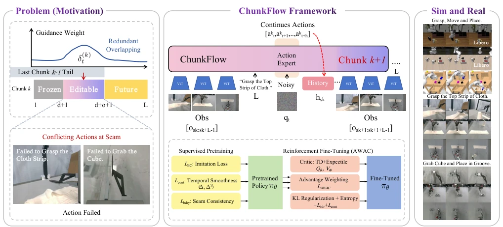
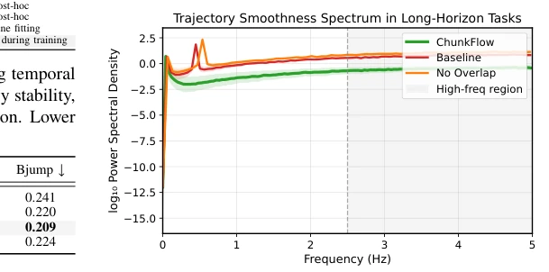
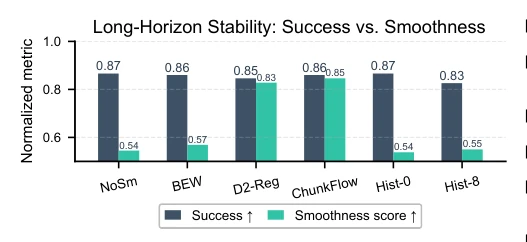

This paper performs a "seam surgery" on the VLA "chunking" strategy. Action chunking indeed saves inference time, but chunks often "conflict" with each other, causing robot action jitter. The authors did not pursue fancy architectures, but instead developed a seam-aware training and execution framework. Although it sounds like patching existing models, the effect is indeed stronger than simple inference smoothing (such as RTC [6]). However, this method essentially relies on hard constraints from the loss function; if the underlying policy itself predicts inaccurately, how far can stitching alone go? Additionally, although real robot experiments are present, the task types are still relatively few, belonging to a "small-step fast-run" robust work, rather than disruptive innovation. It proves that structural constraints are more important than post-processing, but computational overhead and generalization ability still require more verification.
Current VLA models generally adopt Action Chunking [1]-[5] for real-time performance, but this introduces boundary inconsistency (boundary jitter). Existing mitigation methods like RTC [6] only reweight during inference, unable to correct upstream errors, leading to noise accumulation. Mainstream VLA (such as OpenVLA [3], GR2 [2]) ignore execution semantics, leading to long-horizon task failure. This paper aims to solve the temporal coherence problem under chunking strategies, ensuring smooth transitions without increasing inference latency. Especially when historical data contains noise, existing methods easily accumulate residuals, leading to task failure.

Fig. 1: Real-world rollout on Strip-cloth grasping. We deploy Chunk- Flow on a manipulation task where the robot extracts a strip from a cloth stack and places it at a target location. Top: keyframes. Bottom: EE roll- angle traces over the first 200 steps, labeled as jitter Δ𝑎, velocity Δ2𝑎, and acceleration Δ3𝑎(finite differences of the EE roll angle). Compared to PI0.5 [13], ChunkFlow reduces boundary-induced spikes and high- frequency artifacts across all three signals (consistent with lower MSD-Δ𝑎, MSD-Δ2𝑎, and MSD-Δ3𝑎), supporting smoother execution.
ChunkFlow contains three core modules. First is deterministic overlapping fusion, dividing each chunk into frozen, editable, and future zones, performing linear interpolation during execution, requiring no additional forward propagation. Second is continuity regularization, adding boundary loss (L_bdry) and first/second-order smoothness loss (L_cont) during training, and introducing history corruption to enhance robustness. Finally is AWAC fine-tuning, performing reward alignment while retaining structural regularization. The overall process is: Pre-training (BC + reg) -> Fine-tuning (AWAC + reg). Theory proves that the larger the overlap, the faster the boundary error decays. Specifically, L_cont includes total variation and curvature penalty, preventing high-frequency jitter. The AWAC stage uses expectile critics to weight advantages, while retaining KL regularization to prevent policy collapse. This design ensures consistency between training and inference.

Fig. 2: Overview of ChunkFlow. The policy generates temporally overlapping action chunks, which are deterministically blended at boundaries to ensure seam continuity. Training integrates supervised regularization and reinforcement fine-tuning for stable long-horizon execution. Each predicted chunk is partitioned into three segments: frozen (gray, length 𝑑), editable seam (purple-to-pink gradient, length 𝑂), and future (yellow, length 𝑠), corresponding to index ranges [1:𝑑], [𝑑+1:𝑑+𝑂], and [𝑑+𝑂+1:𝐿], respectively.
Tested on CALVIN [16], LIBERO [17], and real robot arms [18]. Compared with HULC [33], OpenVLA [3], PI0.5 [13], etc. Metrics include success rate, MSD (smoothness), Bjump (boundary jump). ChunkFlow achieves 93.4% success rate on LIBERO, superior to RTC [6]'s 83.7%. Ablation shows overlap O=8 is best, history length p=4 is optimal. Spectral analysis indicates high-frequency noise is significantly reduced. In real tasks, cloth grasping and block insertion were both successful, proving generalization. Inference latency remains at 4.43ms, meeting real-time requirements.

Fig. 4: Trajectory smoothness spectrum. ChunkFlow sup- presses high-frequency spectral energy (>2.5 Hz), indicating stable action derivatives in long-horizon tasks. Baselines without structural regularization exhibit aliasing and jitter, visible as sharp PSD peaks.

Fig. 5: Trade-off between trajectory smoothness and task performance. Bars report normalized Success and Smoothness (1−HF_ratio) across key variants: NoSm (no smoothing), BEW (Blend+EMA+Warm), D2-Reg (with D2 loss), ChunkFlow (ours), Hist-0, and Hist-8. ChunkFlow lies on the Pareto frontier, balancing high success with smooth execution.